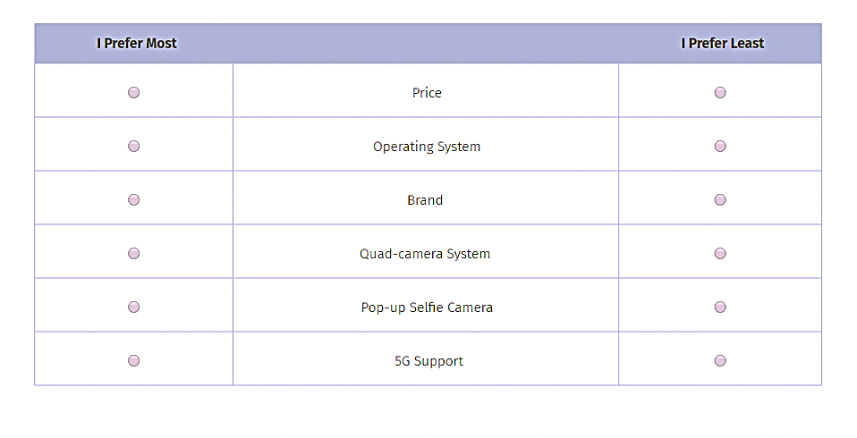
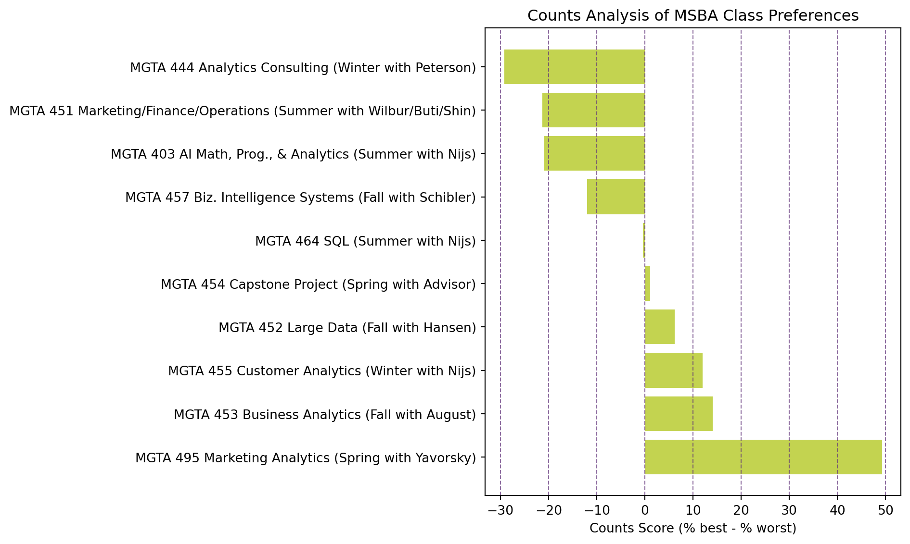
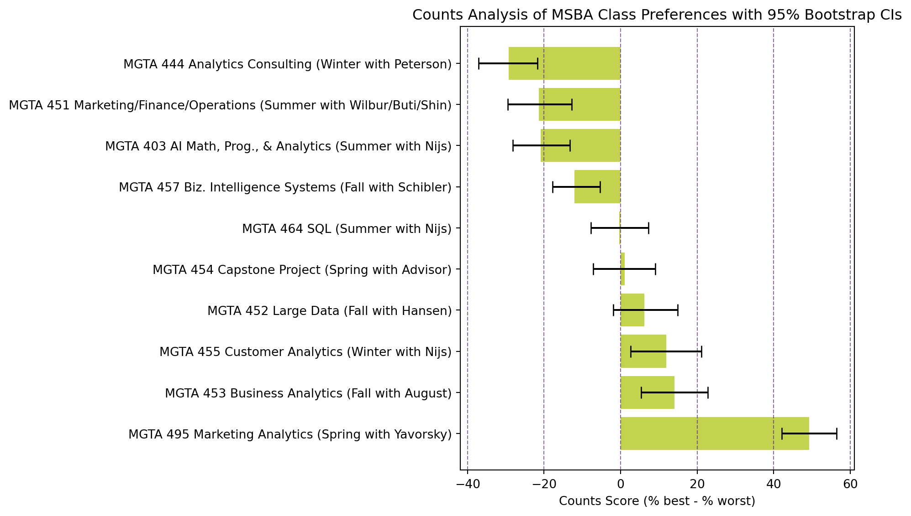
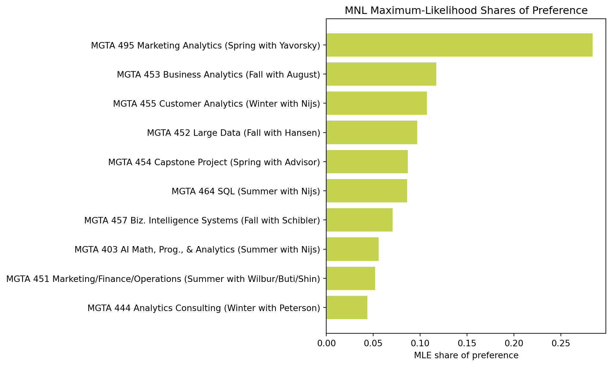
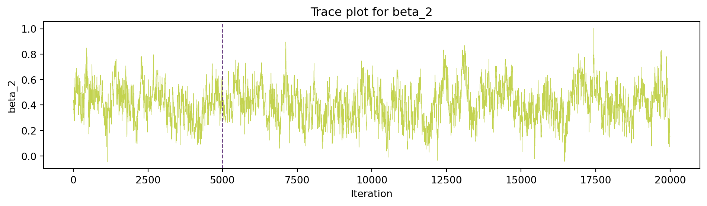
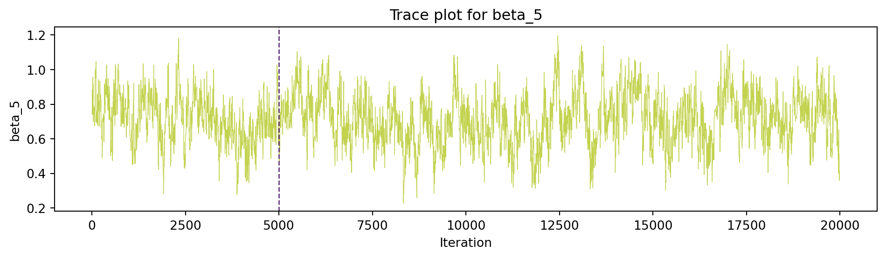
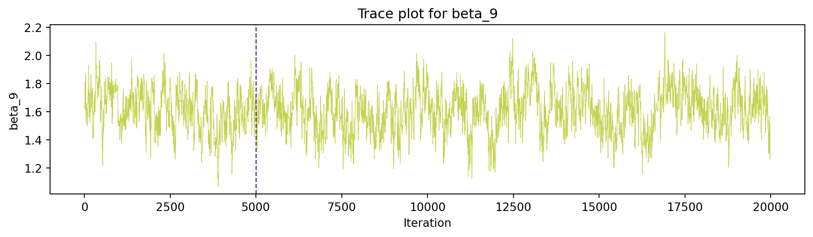
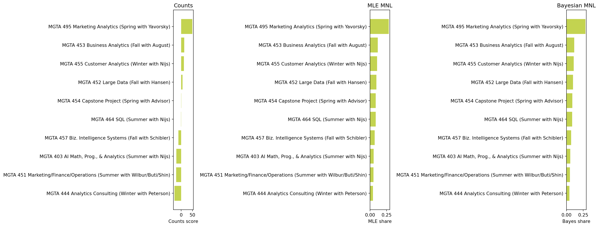

Number of respondents (N): 85
Average tasks per respondent (T): 8.0
Average items per task (J): 4.0
Total unique items in the study: 10MaxDiff Analysis of MSBA Class Preferences
Counts, MLE, and Bayesian Estimation of the MNL model
Introduction
MaxDiff, a survey methodology often used in marketing, also known as Best-Worst Scaling. In marketing, it can be used to measure the relative importance of different attributes, as a form of A/B testing in which effectiveness of product claims or advertising messages can be tested, and to compare different package designs. It involves survey respondents repeatedly choosing their most and least preferred items from small subsets.
For example, we can see here attributes of smartphone preferences, in which respondents pick the most preferred and least preferred attribute from a set of six.

A respondent will see a screen similar to this multiple times, with different combinations of attributes. By analyzing these choices, we can infer the relative importance of each attribute to the respondents.We use MaxDiff rather than a 1-10 scale because of human psychology. Humans are good at making trade-offs — picking a best and a worst — but unreliable at calibrating numeric scales. MaxDiff forces real differentiation between items and avoids scale-use bias.
This post analyzes MaxDiff data on MSBA class preferences using three methods: a simple counts analysis, MNL estimation by maximum likelihood, and MNL estimation by Bayesian methods. We’ll compare the results to understand how each method quantifies preference and uncertainty.
Let’s make a prediction about what we might see before we get into it. The three methods should agree on the broad ranking of classes because they are all analyzing the same underlying choice data. However, they will differ in how they quantify the strength of preference and in how they communicate uncertainty because they make different assumptions and use different approaches to estimate the parameters. The counts analysis will give us a quick descriptive summary, the MLE MNL will provide rigorous point estimates with classical standard errors, and the Bayesian MNL will allow us to easily compute credible intervals on derived quantities like shares of preference.
The Data
Now let’s dive into the data. The MaxDiff survey collected responses from MSBA students about their preferences for the 10 core classes. Each respondent was shown multiple screens, each containing a subset of 4 classes, and asked to pick the most and least preferred class from that subset.
Exploring Our Data
We have columns in our dataset:
Record ID: an anonymized identifier for each respondentTask: the screen number for that respondentPosition: the slot (1–4) on the screen where the item was shownItem: which of the 10 classes is in that slotResponse:1if this item was picked best,-1if picked worst,0otherwise
We will also run some sanity checks to ensure that our data structure and survey structure is not faulty. We do this by ensuring every task has exactly one row with Response = 1 (the “best” pick), exactly one row with Response = -1 (the “worst” pick), and the remaining rows with Response = 0. This is a fundamental property of MaxDiff survey data, and if it fails, it indicates a problem with the data collection or processing.
checks = design_choices.groupby(['Record ID', 'Task'])['Response'].agg(
best_count=lambda x: (x == 1).sum(),
worst_count=lambda x: (x == -1).sum(),
zero_count=lambda x: (x == 0).sum()
).reset_index()
ok = (checks['best_count'] == 1) & (checks['worst_count'] == 1)
print(f"Sanity check passed")Sanity check passedWe must not forget one of the key properties of MaxDiff designs: they balance exposure. This means that each item should be shown roughly the same number of times across the entire study. Here we can report how many times each of the 10 items was shown to respondents, which should be approximately equal for all items if the design is balanced.
| Item | Class | times_shown | |
|---|---|---|---|
| 0 | 1 | MGTA 403 AI Math, Prog., & Analytics (Summer w... | 273 |
| 1 | 2 | MGTA 464 SQL (Summer with Nijs) | 274 |
| 2 | 3 | MGTA 451 Marketing/Finance/Operations (Summer ... | 272 |
| 3 | 4 | MGTA 452 Large Data (Fall with Hansen) | 276 |
| 4 | 5 | MGTA 453 Business Analytics (Fall with August) | 270 |
| 5 | 6 | MGTA 444 Analytics Consulting (Winter with Pet... | 267 |
| 6 | 7 | MGTA 455 Customer Analytics (Winter with Nijs) | 276 |
| 7 | 8 | MGTA 454 Capstone Project (Spring with Advisor) | 272 |
| 8 | 9 | MGTA 495 Marketing Analytics (Spring with Yavo... | 274 |
| 9 | 10 | MGTA 457 Biz. Intelligence Systems (Fall with ... | 266 |
Counts Analysis
What is the Counts Analysis?
The counts analysis is a simple descriptive method to summarize the MaxDiff survey data. For each item, we calculate the percentage of times it was picked as best and the percentage of times it was picked as worst out of the number of times it was shown. The difference between these two percentages gives us a score for each item: \[ \text{score}_j = \%\text{best}_j - \%\text{worst}_j \]
A large positive score indicates that the item is almost always picked as best when shown, while a negative score indicates that it is almost always picked as worst. A score near 0 suggests that the item is polarizing or middle-of-the-pack.
| Item | Class | times_shown | times_best | times_worst | pct_best | pct_worst | counts_score | |
|---|---|---|---|---|---|---|---|---|
| 8 | 9 | MGTA 495 Marketing Analytics (Spring with Yavo... | 274 | 147 | 12 | 53.65 | 4.38 | 49.27 |
| 4 | 5 | MGTA 453 Business Analytics (Fall with August) | 270 | 93 | 55 | 34.44 | 20.37 | 14.07 |
| 6 | 7 | MGTA 455 Customer Analytics (Winter with Nijs) | 276 | 104 | 71 | 37.68 | 25.72 | 11.96 |
| 3 | 4 | MGTA 452 Large Data (Fall with Hansen) | 276 | 77 | 60 | 27.90 | 21.74 | 6.16 |
| 7 | 8 | MGTA 454 Capstone Project (Spring with Advisor) | 272 | 72 | 69 | 26.47 | 25.37 | 1.10 |
| 1 | 2 | MGTA 464 SQL (Summer with Nijs) | 274 | 55 | 56 | 20.07 | 20.44 | -0.36 |
| 9 | 10 | MGTA 457 Biz. Intelligence Systems (Fall with ... | 266 | 23 | 55 | 8.65 | 20.68 | -12.03 |
| 0 | 1 | MGTA 403 AI Math, Prog., & Analytics (Summer w... | 273 | 33 | 90 | 12.09 | 32.97 | -20.88 |
| 2 | 3 | MGTA 451 Marketing/Finance/Operations (Summer ... | 272 | 43 | 101 | 15.81 | 37.13 | -21.32 |
| 5 | 6 | MGTA 444 Analytics Consulting (Winter with Pet... | 267 | 33 | 111 | 12.36 | 41.57 | -29.21 |
Now, let’s visualize these scores in a horizontal bar chart, sorted from highest to lowest. Each bar will be labeled with the class name for clarity.

Bootstrapping
Let’s add 95% bootstrap confidence intervals to the scores. We will resample respondents with replacement, recompute the score for each item, repeat this process around 1,000 times, and then take the 2.5th and 97.5th percentiles to get our confidence intervals.

Analyzing Our Visualization
The most preferred class is the one with the highest counts score, which indicates that it was picked as best more often than it was picked as worst. Our winner is MGTA 495, Marketing Analytics, with Professor Yavorksy. Conversely, the least preferred class is the one with the lowest counts score, indicating that it was picked as worst more often than it was picked as best. MGTA 444, Analytics Consulting has found itself here. The confidence intervals can help us understand the uncertainty around these scores and whether the differences between classes are statistically significant. With the most preferred class, we see a short confidence interval towards the left of bar, indicating that it is consistently preferred across bootstrap samples. The least preferred class has a confidence interval, that, while not as extremely shifted towards the left, is still mostly on the negative side, suggesting that it is consistently less preferred.
From MaxDiff Data to MNL Choices
Now we are going to get into MNL, or the multinomial logit model. This is a more rigorous way to analyze MaxDiff data, as it models the choice process explicitly and allows us to estimate utility coefficients for each item.
But before we get into the estimation, let’s explain how the MaxDiff survey data converts into MNL choice observations. In a MaxDiff survey, each task presents a respondent with a subset of items (in our case, 4 classes) and asks them to pick the most preferred and least preferred item. This can be thought of as two separate choice observations for the MNL model: 1. The first observation is the choice of the best item from the full set of shown items. This is modeled using the soft-max function, where the probability of picking item \(b\) as best is given by: \[ P(\text{best} = b) \;=\; \frac{\exp(\beta_b)}{\exp(\beta_a) + \exp(\beta_b) + \exp(\beta_c) + \exp(\beta_d)} \] 2. The second observation is the choice of the worst item from the remaining items after the best item has been removed. This is also modeled using a soft-max function, but with the utilities flipped (since we are modeling the worst choice): \[ P(\text{worst} = c \mid \text{best} = b) \;=\; \frac{\exp(-\beta_c)}{\exp(-\beta_a) + \exp(-\beta_c) + \exp(-\beta_d)} \] So each task gives us two MNL observations: one for the best pick from the full set, and one for the worst pick from the remaining set. This allows us to use all the information from the MaxDiff survey to estimate the utility coefficients for each item.
The MNL model assigns each item \(j\) a utility coefficient \(\beta_j\), which represents the relative preference for that item. However, the soft-max function is invariant to adding a constant to all \(\beta\) coefficients, which means that only \(J - 1\) of the coefficients are identified. To address this issue of identifiability, we can fix one of the coefficients as a reference point. For example, we can set \(\beta_1 = 0\) and estimate the remaining coefficients \(\beta_2, \ldots, \beta_{10}\). This normalization allows us to interpret the estimated coefficients as relative preferences compared to the reference item.
Let’s reshape the data into a form that is convenient for the likelihood function. One workable structure is to create a dataset where each row corresponds to a task, and we have columns for the 4 item numbers shown, which one was picked as best, and which one was picked as worst. This way, we can easily iterate over tasks in the likelihood function when we fit the MNL model. For each task, store the 4 item numbers, which one was picked best, and which one was picked worst. You’ll iterate over tasks in the likelihood function.
| Record ID | Task | items_shown | best_item | worst_item | remaining_after_best | |
|---|---|---|---|---|---|---|
| 0 | 69fb85fbd66b452e6decf4f7 | 1 | [5, 7, 4, 1] | 7 | 1 | [5, 4, 1] |
| 1 | 69fb85fbd66b452e6decf4f7 | 2 | [8, 3, 10, 9] | 10 | 8 | [8, 3, 9] |
| 2 | 69fb85fbd66b452e6decf4f7 | 3 | [3, 5, 2, 6] | 2 | 6 | [3, 5, 6] |
| 3 | 69fb85fbd66b452e6decf4f7 | 4 | [6, 4, 8, 7] | 7 | 6 | [6, 4, 8] |
| 4 | 69fb85fbd66b452e6decf4f7 | 5 | [2, 9, 7, 1] | 2 | 1 | [9, 7, 1] |
MNL via Maximum Likelihood
It’s Likelihood time! Now that we have our data structured for MNL estimation, we can write down the log-likelihood function and maximize it to get our estimates of the \(\beta\) coefficients.
Our log-likelihood function sums over all tasks, accounting for both the best and worst choices. For each task, we have a contribution from the best pick and a contribution from the worst pick. The log-likelihood can be expressed as: \[ \ell(\boldsymbol{\beta}) \;=\; \sum_{\text{tasks}} \Big[\, \beta_{j^*_b} \;-\; \log \!\!\!\sum_{j \in \text{shown}}\!\!\! \exp(\beta_j) \;-\; \beta_{j^*_w} \;-\; \log \!\!\!\!\!\sum_{j \in \text{shown} \setminus \{j^*_b\}}\!\!\!\! \exp(-\beta_j) \,\Big] \] where \(j^*_b\) is the item picked best in that task and \(j^*_w\) is the item picked worst.
Coding Our Log-Likelihood Function
def expand_beta(theta):
"""Map the 9 free parameters into a beta vector indexed by item number.
Item 1 is fixed to zero for identification.
"""
beta = np.zeros(num_items + 1)
beta[1] = 0.0
beta[2:] = theta
return beta
def log_likelihood(theta):
beta = expand_beta(theta)
best_part = beta[best_items] - logsumexp(beta[items_matrix], axis=1)
worst_part = -beta[worst_items] - logsumexp(-beta[remaining_matrix], axis=1)
return np.sum(best_part + worst_part)
def neg_log_likelihood(theta):
return -log_likelihood(theta)print(f"Optimization message: {mle_out.message}")
print(f"Final log-likelihood: {log_likelihood(theta_hat):.3f}")Optimization message: Desired error not necessarily achieved due to precision loss.
Final log-likelihood: -1572.731The optimizer may report precision-loss warnings because the likelihood surface is fairly flat in some directions, but the solution is stable and the finite-difference Hessian below is positive definite.
Analyzing Our MLE Results
We can now look at the estimated \(\hat\beta\) coefficients, their standard errors, and the derived shares of preference. The \(\hat\beta\) coefficients represent the relative utility of each class compared to the reference class (the one with \(\beta_1 = 0\)). A higher \(\hat\beta\) indicates a stronger preference for that class. The standard errors give us a sense of the uncertainty around these estimates. The shares of preference, derived from the \(\hat\beta\) coefficients, provide a more intuitive interpretation of the results, showing the proportion of choices each class would receive if they were all presented together.

The MLE ranking is essentially the same as the counts ranking. MGTA 495 Marketing Analytics is still clearly the most preferred class, with an estimated share of preference around 28%. The next group is MGTA 453 Business Analytics and MGTA 455 Customer Analytics. The lowest share belongs to MGTA 444 Analytics Consulting. The MNL model adds structure by modeling both chosen and non-chosen alternatives within each task, rather than only counting best and worst selections.
MNL via Bayesian Estimation
We can fit the same MNL model using Bayesian methods instead of maximum likelihood. Bayesian estimation allows us to compute the full posterior distribution over the \(\beta\) coefficients, which gives us a richer understanding of uncertainty compared to point estimates and standard errors from MLE.
The posterior distribution over \(\boldsymbol{\beta}\) is given by Bayes’ rule: \[ \pi(\boldsymbol{\beta} \mid \boldsymbol{y}) \;\propto\; L(\boldsymbol{\beta}) \cdot \pi(\boldsymbol{\beta}) \] where \(L(\boldsymbol{\beta})\) is the likelihood function we defined earlier, and \(\pi(\boldsymbol{\beta})\) is the prior distribution over the parameters.
For our prior, we will use a weakly informative multivariate normal distribution: \(\boldsymbol{\beta} \sim N(\boldsymbol{0},\; 10 \cdot I)\). This means that each \(\beta_j\) has a mean of 0 and a standard deviation of \(\sqrt{10} \approx 3.2\), which is diffuse enough to allow the data to speak while still providing some regularization.
Random Walk Metropolis-Hastings Sampler
To sample from the posterior distribution, we can implement a random-walk Metropolis-Hastings sampler. We will run the sampler for around 20,000 iterations, discarding the first 25% as burn-in. We will also tune the step size to achieve an acceptance rate of roughly 25–40%.
def log_posterior(theta):
prior_sd = np.sqrt(10)
log_prior = np.sum(-0.5 * (theta / prior_sd) ** 2 - np.log(prior_sd * np.sqrt(2 * np.pi)))
return log_likelihood(theta) + log_prior
def metropolis_hastings(theta0, n_iter=20000, step=0.08, seed=123):
rng = np.random.default_rng(seed)
K = len(theta0)
draws = np.zeros((n_iter, K))
theta = theta0.copy()
lp = log_posterior(theta)
accept = 0
for t in range(n_iter):
theta_star = theta + rng.normal(0, step, K)
lp_star = log_posterior(theta_star)
if np.log(rng.uniform()) < lp_star - lp:
theta = theta_star
lp = lp_star
accept += 1
draws[t, :] = theta
return draws, accept / n_iter# The step size was tuned to give an acceptance rate in the target range.
draws, accept_rate = metropolis_hastings(theta_hat, n_iter=20000, step=0.08, seed=123)We can now report the acceptance rate of 28.73%. This is within the target range of 25–40%, indicating that our step size is well-tuned for efficient exploration of the posterior distribution. An acceptance rate that is too low (e.g., below 20%) would suggest that the sampler is proposing moves that are too large, leading to many rejections and slow mixing. Conversely, an acceptance rate that is too high (e.g., above 50%) would indicate that the sampler is proposing moves that are too small, resulting in slow exploration of the parameter space. Our acceptance rate of around 28% suggests a good balance between these extremes, allowing for effective sampling from the posterior distribution.
print(f"Acceptance rate: {accept_rate:.2%}")
burn = int(0.25 * len(draws))
post_theta = draws[burn:, :]
post_beta = np.column_stack([np.zeros(post_theta.shape[0]), post_theta])Acceptance rate: 28.73%


The trace plots look like fuzzy caterpillars after burn-in rather than slow drifting lines. That pattern indicates that the chain is moving around the posterior distribution instead of continuing to search for a new region.
Comparing the Three Methods
Now that we have results from all three methods — counts, MLE MNL, and Bayesian MNL — let’s put them side-by-side for comparison. We will create a table that includes the item/class label, counts score, counts rank, MLE share and rank, and Bayesian posterior mean share and rank. We will sort this table by one of the rankings (e.g., MLE rank) to make it easier to compare.
| Item | Class | counts_score | counts_rank | mle_share | mle_rank | post_mean_share | bayes_rank | |
|---|---|---|---|---|---|---|---|---|
| 8 | 9 | MGTA 495 Marketing Analytics (Spring with Yavo... | 49.2701 | 1 | 0.2839 | 1 | 0.2842 | 1 |
| 4 | 5 | MGTA 453 Business Analytics (Fall with August) | 14.0741 | 2 | 0.1171 | 2 | 0.1167 | 2 |
| 6 | 7 | MGTA 455 Customer Analytics (Winter with Nijs) | 11.9565 | 3 | 0.1072 | 3 | 0.1077 | 3 |
| 3 | 4 | MGTA 452 Large Data (Fall with Hansen) | 6.1594 | 4 | 0.0969 | 4 | 0.0970 | 4 |
| 7 | 8 | MGTA 454 Capstone Project (Spring with Advisor) | 1.1029 | 5 | 0.0867 | 5 | 0.0866 | 5 |
| 1 | 2 | MGTA 464 SQL (Summer with Nijs) | -0.3650 | 6 | 0.0862 | 6 | 0.0858 | 6 |
| 9 | 10 | MGTA 457 Biz. Intelligence Systems (Fall with ... | -12.0301 | 7 | 0.0704 | 7 | 0.0700 | 7 |
| 0 | 1 | MGTA 403 AI Math, Prog., & Analytics (Summer w... | -20.8791 | 8 | 0.0556 | 8 | 0.0570 | 8 |
| 2 | 3 | MGTA 451 Marketing/Finance/Operations (Summer ... | -21.3235 | 9 | 0.0520 | 9 | 0.0516 | 9 |
| 5 | 6 | MGTA 444 Analytics Consulting (Winter with Pet... | -29.2135 | 10 | 0.0438 | 10 | 0.0435 | 10 |

A Word on The Comparison
All three methods agree almost exactly on the ranking. They identify MGTA 495 Marketing Analytics as the strongest class by a large margin, followed by Business Analytics and Customer Analytics. They also agree that Analytics Consulting, Marketing/Finance/Operations, and AI Math, Programming, and Analytics are at the bottom of this particular survey. The agreement is strong because the preference signal is not subtle: the top and bottom items are separated clearly in the data. The disagreement is quite small and mostly in the middle of the ranking, where items have similar utility and small noise can flip their order.
The MNL model adds value over counts because it models the actual choice process. Every item shown in a task contributes information, including items that were not selected as best or worst. This allows the MNL to extract more signal from the data and provide a more nuanced ranking, especially for items in the middle of the pack. The counts method only looks at best and worst picks, while the MNL considers the full set of shown items and their relative utilities.
The Bayesian model adds value over MLE because it makes uncertainty on derived quantities, such as shares of preference, easy to compute. Instead of relying on a delta-method approximation, we can pass every posterior draw through the soft-max formula and summarize the resulting distribution. This allows us to get credible intervals on shares of preference directly from the posterior distribution, which is more accurate and informative than the standard errors from MLE. The Bayesian approach also allows for more flexible modeling, such as hierarchical extensions to estimate individual-level preferences, which would be more complex to implement in a frequentist framework.
Discussion
Enough of the technical jargon — let’s step back and synthesize what we found.
The main substantive conclusion is that students in this sample most prefer MGTA 495 Marketing Analytics, with a large gap between it and the rest of the classes. I, personally do not find this as a surprise. I may be biased, as I have taken a previous course during my undergraduate studies. But, given that my opinion has not changed since then, I believe the results check out.The next tier contains MGTA 453 Business Analytics and MGTA 455 Customer Analytics. Again, I do not find this surprising. While Customer Analytics is notorious for being one of the most diffocult classes, it is also agreed upon that it is one of the most valuable to students. The least preferred item in this MaxDiff survey is MGTA 444 Analytics Consulting. It is disheartening to see any class ranked last. However, I hypothesis that this might be due to the less technical nature of the course. Or, possibly, in my opinion, a class that would have been very valuable during the quarter of the capstone project.
Methodologically, the three approaches answer slightly different questions. The counts analysis is best for a quick dashboard-style summary because it is simple and transparent. It is also the easiest to interpret and explain to a general audience. The MLE MNL model is better when we want a formal choice model with point estimates, standard errors, and interpretable preference shares. It is most useful when we want a single, definitive answer with uncertainty estimates. The Bayesian MNL model is most useful when we care about uncertainty in simulated or transformed outcomes, such as shares of preference, market simulations, or hypothetical changes to the choice set. The Bayesian approach also allows for more complex extensions, such as hierarchical models to estimate individual-level preferences, which would be more difficult to implement in a frequentist framework.
There are also important caveats. The survey appears to use a self-selected sample of MSBA students, so the results may not generalize to every student in the program or to future cohorts. These students, chose to take this Marketing Analytics course, so seeing that the Marketing Analytics course ranked the highest across models, we might be witnessing a form of selection bias. Additionally, this is a very specific group of students, and because they were not chose randomly, we cannot confidently say that our results would generalize to future cohorts. Preferences could also be affected by when students took the survey, what classes they had already completed, the instructors they knew, and the order in which items appeared.
If I had more time, I would explore how preferences differ by cohort, career interests, or prior exposure to each subject. For example, do students with a background in marketing prefer the Marketing Analytics class more than those with a background in finance? Do students who have already taken certain classes have different preferences for the remaining classes? Do students with more work experience behave and answer differently than students with less experience? Exploring angles such as these, would provide a richer understanding of how preferences vary across different segments of the student population and could inform course offerings and advising strategies in the future.